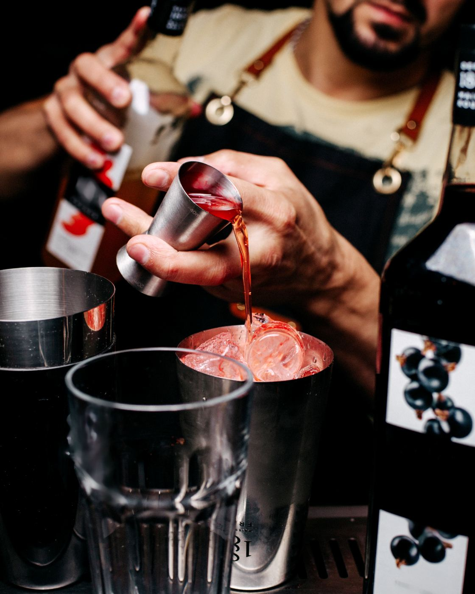

Dos noches para vivir a la italiana
Torremolinos huele a pasta fresca y Aperol Spritz dos noches del próximo agosto. Little Italy Gastro Fest llega a Plaza Paraíso el 27 y 28 de agosto de 2026 y convierte la Plaza de Toros de Torremolinos en una gran piazza mediterránea.
No es un mercadillo de food trucks ni un stand suelto en una feria. Es un festival gastronómico completo, con cuatro zonas temáticas, música en directo y una noche pensada para quedarte hasta el final. La premisa es simple: nada de atajos, todo hecho en el momento. Pasta que se cocina delante de ti, pizza con masa de larga fermentación y una Nonna que hace de anfitriona toda la noche.
Cuatro zonas, una sola noche no basta
Todo gira alrededor de La Piazza, el espacio central con luz cálida, mesas para compartir y música en directo sin pausas. Desde ahí se accede a las cuatro zonas gastronómicas del festival:
🍝 La Barra de la Nonna
La zona salada: pasta fresca en varios formatos, paninis con focaccia artesanal y tablas de quesos y embutidos italianos al corte — prosciutto di Parma, salami Milano, bresaola.
🍕 La Pizza
Formato al taglio, con masa de larga fermentación, tomate San Marzano y fior di latte. Horneada según va saliendo, sin esperas.
🍮 Dolce Italia
El postre como ritual: tiramisú de cuchara, cannoli con ricotta fresca y gelato artigianale. La excusa perfecta para quedarte una hora más.
🍹 El Aperitivo de Hugo
Coctelería italiana: Aperol Spritz, Negroni, Bellini, Hugo Spritz y vermut. El aperitivo entendido como ritual, no como bebida rápida antes de irse.

Música en directo y el sorteo de un viaje a Roma
Además de comer y brindar, el festival programa música en directo y shows en vivo cada noche en La Piazza. Todas las entradas entran automáticamente en el sorteo de un viaje a Roma para dos personas: compras tu entrada, disfrutas la noche y, con suerte, te llevas la Città Eterna de propina. Los detalles del sorteo se explican en el propio recinto.
Puedes ver la propuesta completa en la web oficial de Little Italy Gastro Fest.

Información práctica
Fechas: Jueves 27 y viernes 28 de agosto de 2026
Horario: De 18:30 h a cierre
Dónde: Plaza de Toros de Torremolinos, al aire libre
Entradas: Desde 4€ por día · plazaparaiso.com/entradas
Menores: Entrada gratuita hasta los 12 años
Más info: plazaparaiso.com/littleitaly
¿Es un plan para toda la familia?
Sí. La entrada es gratuita hasta los 12 años, algo que diferencia a Little Italy de propuestas más nocturnas como Bresh o Loco Bongo. Los menores de 16 años pueden entrar acompañados de un adulto responsable con la autorización firmada por su padre, madre o tutor legal. Desde los 14 años pueden acceder sin acompañante, aunque puede pedirse el DNI para acreditar la edad y sigue haciendo falta la autorización firmada, disponible en las condiciones generales del festival.
Little Italy forma parte de Plaza Paraíso, el ciclo que llena la Plaza de Toros de Torremolinos de música, teatro, gastronomía y ocio durante todo el verano. Si buscas más planes, revisa la guía completa de planes de verano en Torremolinos o el programa completo.